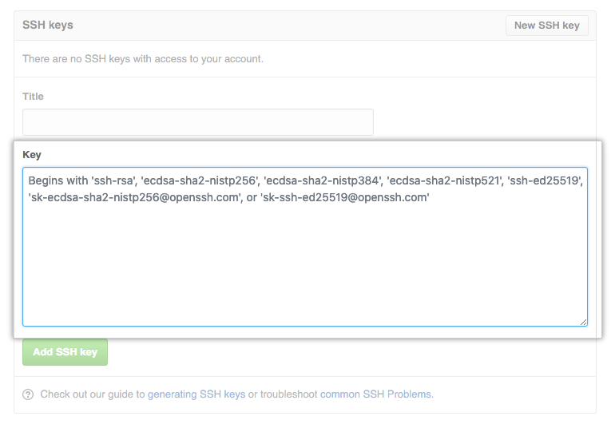

In this session we will:
- create a GitHub account
- create a new repository
- practice commit, push and pull
- work on merges in pairs

This guide is a mix of a few tutorials with some notes from me
You can find the original tutorials in the links below:
The easiest way to get started is to create an account on GitHub.com (it's free).

Pick a username, enter your email address and a password, and click Sign up for GitHub. Once you are in, it will look something like this:

make sure you have git install on your machine
To make sure, open the terminal and type git help
if you get an error message download git from the sources blow:
- Windows - http://git-scm.com/download/win
- Mac:
- use brew with
brew install git - http://git-scm.com/download/mac
- use brew with
- Linux:
- Debian (Ubuntu):
sudo apt-get install git - Fedora:
sudo yum install git
- Debian (Ubuntu):
Using the SSH protocol, you can connect and authenticate to remote servers and services. With SSH keys, you can connect to GitHub without supplying your username and personal access token at each visit.
⚠️ This part can be scary, don't panic you only need to to this once for all your projects. ⚠️
Don't be afraid to call for help if you need some
- Open Git Bash on windows or Terminal on Mac/Linux.
- Paste the text below, substituting in your GitHub email address.
ssh-keygen -t ed25519 -C "your_email@example.com" - When you're prompted to "Enter a file in which to save the key press Enter. This accepts the default file location.
Enter a file in which to save the key (/c/Users/you/.ssh/id_algorithm):[Press enter]
your key location will be:- windows:
/c/Users/you/.ssh/ - Linux:
/home/you/.ssh/ - Mac:
/Users/you/.ssh/
Keep press Enter until it's done
- windows:
- find your public key at the key location and copy the context of the file that end with
.pub- you can open it with notepad.
you can also navigate to the folder usingcd <YOUR_PATH>and thenlsto see the list of all your files and thencat <YOUR_FILE_NAME>.pub.
make sure to copy the public -.pubfile - Go to GitHub and in the upper-right corner of any page, click your profile photo, then click Settings.

- In the user settings sidebar, click SSH and GPG keys.

- Click New SSH key or Add SSH key.

- In the "Title" field, add a descriptive label for the new key. For example, if you're using a personal Mac, you might call this key "Personal MacBook Air".
- Paste your key into the "Key" field.
 - Click Add SSH key. If prompted, confirm your GitHub password.
Testing your SSH connection
to check your SSH connection open Terminal (or git bush on windows) and write ssh -T git@github.com
You may see a warning like this:
> The authenticity of host 'github.com (IP ADDRESS)' can't be established.
> RSA key fingerprint is SHA256:nThbg6kXUpJWGl7E1IGOCspRomTxdCARLviKw6E5SY8.
> Are you sure you want to continue connecting (yes/no)?
then type yes and you should see:
> Hi username! You've successfully authenticated, but GitHub does not provide shell access.
A repository is like a place or a container where something is stored; in this case we're creating a Git repository to store code. To create a new repository, select New Repository from the + sign dropdown menu.

Enter a name for your repository and click Create Repository.
If you want you can choose if your want your repository to be private.
Congratulations! You have set up your first repo on GitHub.com.
Once your repo is created, it will look like this:
Open a new folder on your computer, this will be your code library for this codelab.
open this folder with Visual studio code (or any other IDE you like) and create a file called readme.md and write a nice message inside.
To tell your computer that Demo is a directory managed by the Git program, enter:git init
Then, to tell the Git program you care about this file and want to track any changes from this point forward, enter:git add readme.md
Make a commit
So far you've created a file and told Git about it, and now it's time to create a commit.
Commit can be thought of as a milestone. Every time you accomplish some work, you can write a Git commit to store that version of your file, so you can go back later and see what it looked like at that point in time.
Whenever you make a change to your file, you create a new version of that file, different from the previous one.
To make a commit, enter:git commit -m "first commit"
That's it! You just created a Git commit and included a message that says first commit.
You must always write a message in commit; it not only helps you identify a commit, but it also enables you to understand what you did with the file at that point.
So tomorrow, if you add a new piece of code in your file, you can write a commit message that says, Added new code, and when you come back in a month to look at your commit history or Git log (the list of commits), you will know what you changed in the files.
Connect your GitHub repo with your computer
Now, it's time to connect your computer to GitHub with the command:git remote add origin <YOUR_REPO_URL> you can find the URL on the github page
for example:git remote add origin https://github.com/<your_username>/Demo.git
Let's look at this command step by step. We are telling Git to add a remote called origin with the address https://github.com//Demo.git (i.e., the URL of your Git repo on GitHub.com). This allows you to interact with your Git repository on GitHub.com by typing origin instead of the full URL and Git will know where to send your code.
Push your code
to push your code and update it on Github just write: git push -u origin master
üë• The following part will be in couples üë•
For this step find another person in the room and ask for the link to their Repository.
Clone
now press on the green code button and under clone you will see the SSH URL for the repository.

Next, on your local machine, open your bash shell and change your current working directory to the location where you would like to clone your repository. Note that here we are using a bash command - cd (change directory).
Once you have navigated to the directory where you want to put your repository, you can use:git clone git@github.com:microsoft/vscode.git
This will download your friend repository to your computer, navigate inside that folder using cd commend.
Branches
As we talked on the lecture we will never work on the master branch, so now you should create a new branch for your work.
to create a new branch use the commend:git checkout -b <YOUR_NEW_BRANCH_NAME>
üí° git checkout is used to switch between branches, the -b flag tell git it's a new branch.